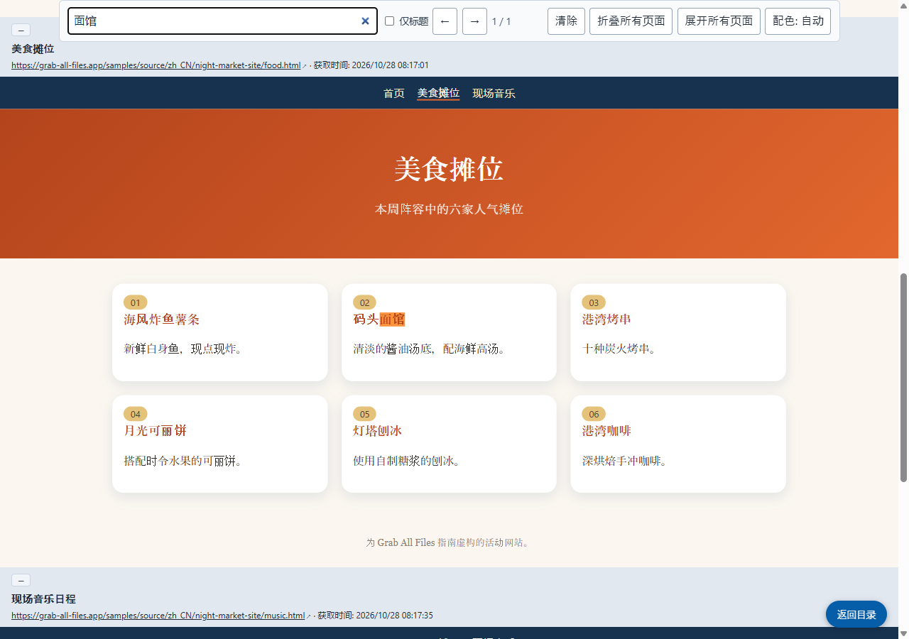

Grab All Files 的真实输出
将三个页面按原样合并，并附目录和搜索（Pro）
一个有自己配色和字体的虚构活动网站（首页、美食摊位、现场音乐，共三个页面），选择“保持原样”和“带目录和搜索的HTML”，合并为一个 HTML 文件。每个页面都以原有设计放在一个框中，上方标有来源地址和获取时间。顶部的目录可跳转到各页面，搜索框可搜索全部三个页面。
输出文件
打开保存的 HTML 并搜索“面馆”（由本站截取的截图）

制作方式
- 源页面
- /samples/source/zh_CN/night-market-site/
- 扩展程序
- Grab All Files 5.8.31
- 浏览器
- Chrome 156.0.8078.48 (Windows 11)
- 版本
- Pro
- 制作日期
- 2026-10-28
- 设置
- 页面范围：跟随本页的链接（3 个页面）
- 外观：保持原样
- 输出：带目录和搜索的HTML
- 图片：离线保存（默认）